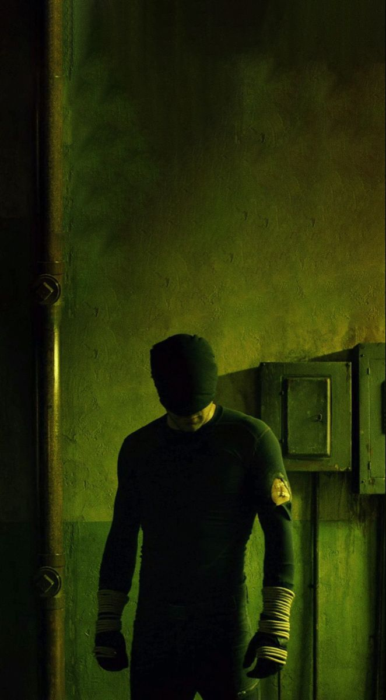
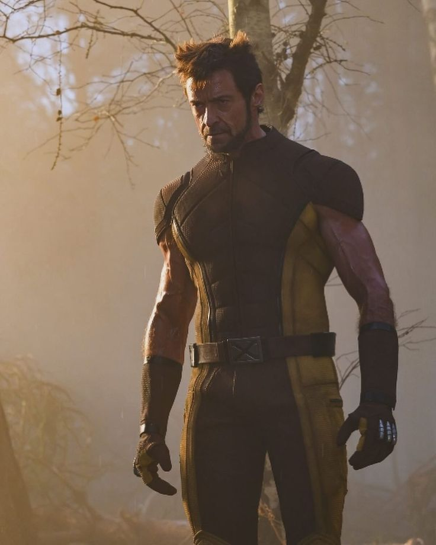

Three iconic heroes, each with their own unique journey, strength, and sense of justice.
Daredevil

Daredevil, also known as Matt Murdock, is a blind lawyer by day and a vigilante crimefighter by night. His heightened senses make him a formidable hero despite his blindness.
Key Characteristics
Enhanced Senses: Matt Murdock possesses superhuman senses like hearing, smell, and touch that allow him to perceive the world around him in extraordinary detail.
Lawyer by Day: He works as a dedicated lawyer, fighting for justice in the courtroom.
Resilient and Fearless: Known for his indomitable will, Daredevil is fearless and persistent even in the face of danger.
Wolverine

Wolverine, or Logan Howlett, is a mutant with enhanced regenerative healing and an adamantium-coated skeleton. He is a survivor, shaped by trauma and loss, fighting for justice with ferocity.
Key Characteristics
Regenerative Healing Factor: Wolverine heals from almost any injury, making him virtually immortal.
Adamantium Skeleton and Claws: His skeleton is laced with indestructible adamantium, and he has retractable claws capable of slicing through almost anything.
Animal Instincts: Wolverine has heightened senses and a rage-driven determination, making him a fearsome opponent in battle.
The Punisher (Frank Castle)
The Punisher, Frank Castle, is a former Marine who becomes a vigilante after the tragic loss of his family. With his military training and relentless pursuit of justice, he takes the law into his own hands.
Key Characteristics
Military Training: Frank Castle is a skilled combatant, proficient with various weapons and tactics.
Vigilante Justice: He uses lethal force to punish criminals, making him one of the most feared antiheroes.
Obsessive Drive: Driven by the loss of his family, Frank pursues his mission with a single-minded determination, often at great personal cost.